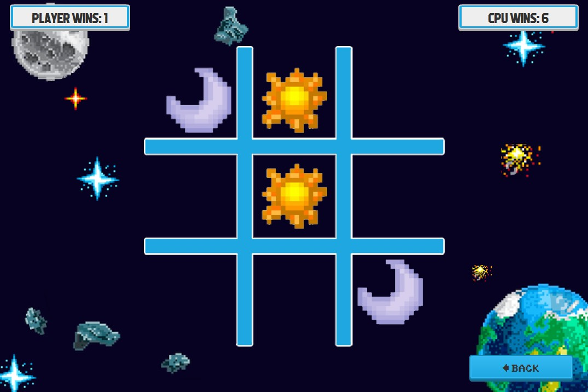
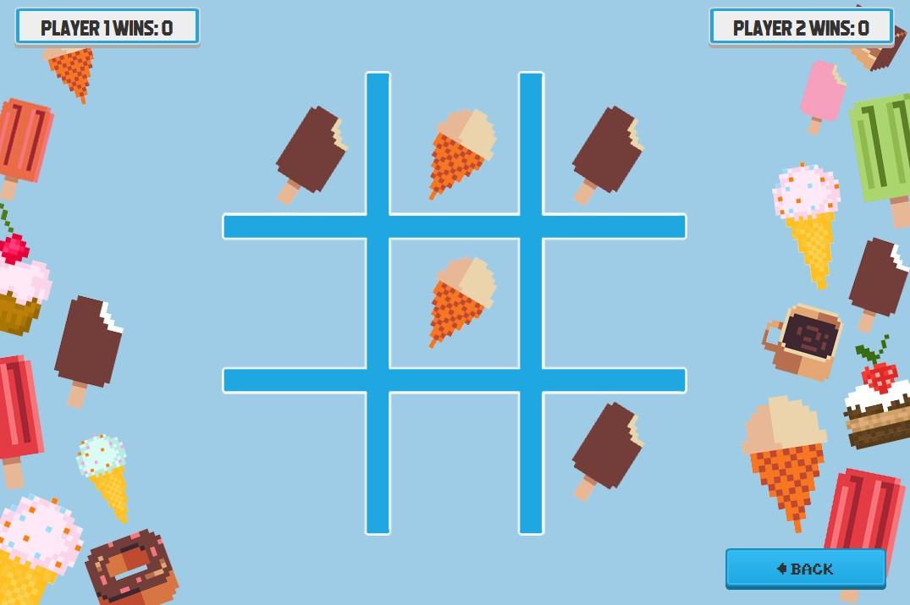

Tic-Tac-Toe Game
A tic-tac-toe game with four themes and two game modes.


This project involved creating the classic game of tic-tac-toe with a visually appealing UI and set of themes.
The user can select a theme from the four: an ice cream theme, space theme, beach theme, or nature theme.
The tic-tac-toe game also features a scoreboard and various sounds that play depending on the buttons clicked or outcome of the
games. The game can be played against another user on the same machine or against the computer. In the "vs player" mode,
the order of play is determined by a random coin flip on the first turn and the turns are then alternated.
Technology used: Java & JavaFX